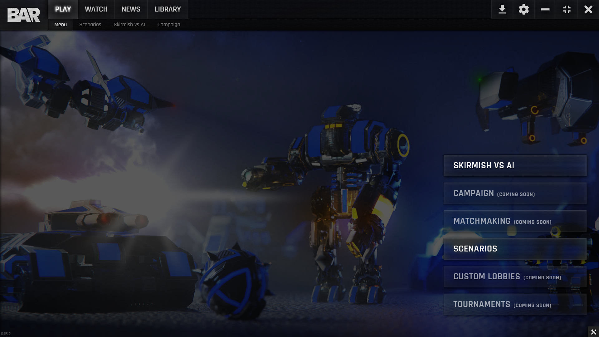
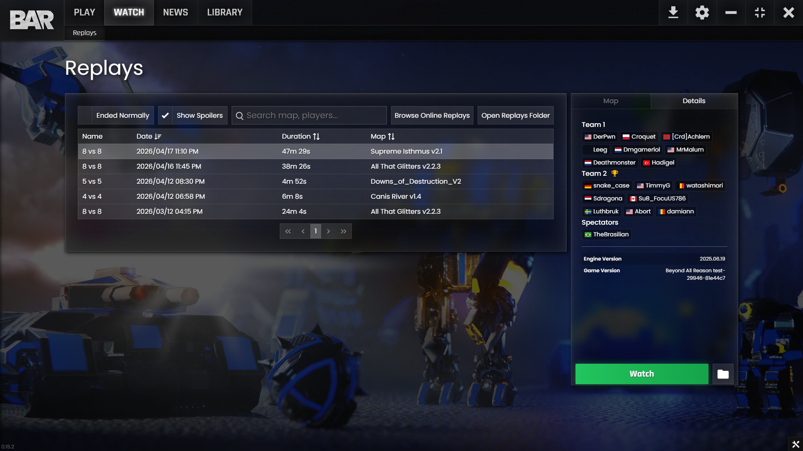

Lobby Participants
Right-click player, spectator, or chat name to report
Lobby Chat
Sample moderation flow

Replay Browser
Select a replay, then report from the replay participant list
Replay Details
Right-click names to report
News
This presentation mockup focuses on reporting flows. Use Play, Watch, or Friends to demonstrate them.
Library
This presentation mockup focuses on reporting flows. Use Play, Watch, or Friends to demonstrate them.
Friends
Right-click any friend to report